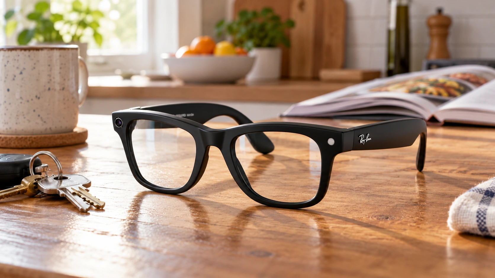

Meta Releases a 120-Task Test for Everyday AI Glasses Assistants
InteractiveWorld tests how AI assistants help with everyday tasks, but a simulated benchmark is still a step away from reliable wearable products.

Meta has released InteractiveWorld, a research environment for testing whether an AI assistant can help someone complete everyday tasks through a first-person view and conversation. Its accompanying InteractiveBench contains 120 fixed tasks. The initial public code release appeared late October 24 UTC, putting a new evaluation tool behind a practical question: can an assistant help a person act, rather than simply describe what it sees?
That distinction matters for smart glasses. A convincing answer to a question is useful, but a wearable assistant must also follow what changes around its user. If an object moves, a task is interrupted or a warning arrives too late, fluent language alone may not produce a successful outcome. Our analysis of AI agent returns addresses the same broader issue: useful performance needs to connect to completed work.
This is a research release, not the announcement of a new Ray-Ban Meta device or a claim that existing glasses have passed every task. The repository provides a way to study assistance inside a simulated environment. TTN has reviewed the published documentation; it has not independently run the benchmark or verified real-world wearable performance.
A person acts, an assistant advises
InteractiveWorld separates the assistant from the person carrying out actions. The assistant receives first-person observations and dialogue. A second model plays the human participant, interacting with a stateful three-dimensional world. That separation makes advice consequential: an instruction must be understood and acted upon before the environment changes.
The simulation includes 44 environments drawn from BEHAVIOR-1K and supports 36 families of actions. Its benchmark organizes tasks into six categories: guidance, planning, accessibility, decision-making, prevention and finding. Each category contains 20 tasks. Together, they broaden evaluation beyond whether a model can recognize a static image or answer a single isolated question.
The benchmark guide describes tasks involving activities such as finding objects and helping with food-related decisions. It also allows the assistant to remain silent. That is a significant design choice: an assistant that interrupts constantly may offer many technically relevant observations while still being unpleasant or distracting to use. Evaluating when to speak is part of evaluating whether assistance is useful.
Scoring includes human judgment
The documentation describes two evaluation layers. Simulator checks can determine whether specified world-state goals and process conditions were satisfied. Separately, the official release rubric uses human adjudication of transcripts and video, with 464 criteria across six protocols. The existence of verifiable simulation states therefore does not make the entire assessment automatic.
These approaches answer different questions. A final state can show that an object reached the correct place. Reviewing the interaction can reveal whether the assistant communicated effectively along the way. For product developers, that distinction prevents a narrow success measure from concealing poor user experience. A technically completed task can still involve confusing instructions or unnecessary interruptions.
Holding the simulated human model fixed is intended to make comparisons more consistent. Nevertheless, results will depend on the evaluation setup. A model's performance with a simulated participant cannot establish how people with different habits, abilities or communication styles would respond. That limitation is a reason for further testing, not a reason to dismiss the benchmark.
Research infrastructure, not a phone app
Running InteractiveWorld requires substantial infrastructure. The installation guide specifies Linux, an NVIDIA GPU and roughly 100 GB of disk capacity for the environment and assets. It depends on simulation software and separately obtained datasets. This is a technical research workflow, not a consumer app that a glasses owner can download and start using over breakfast.
The code's CC BY-NC 4.0 license also matters. Public availability does not automatically grant unrestricted commercial use, and external assets carry their own conditions. Companies assessing the release need to examine those terms before incorporating material into a commercial workflow. Describing it simply as unrestricted open-source software would obscure a practical constraint.
Privacy remains another step between research and deployment. A first-person assistant may observe rooms, documents and other people. The benchmark release does not settle how a commercial product should obtain permission, retain observations or limit access. Our guide to AI data security explains why those controls belong alongside performance measures.
InteractiveWorld's immediate contribution is a more demanding way to ask whether assistance works. The next evidence to watch is reproducible model comparisons, clear reporting of failure cases and testing with real users. A useful benchmark can expose the gap between an impressive demonstration and dependable help; closing that gap still requires evidence beyond the simulator.
Sources and methodology
Sources checked October 25, 2026. Reported findings and company or regulatory statements are attributed in the text; discussion of financial implications is editorial analysis. The generated cover is illustrative.